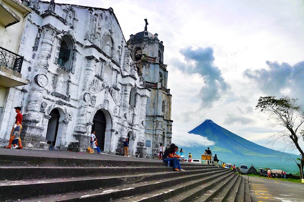
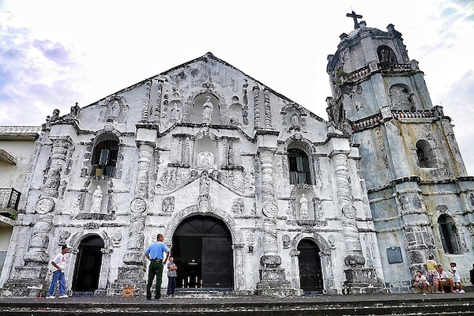
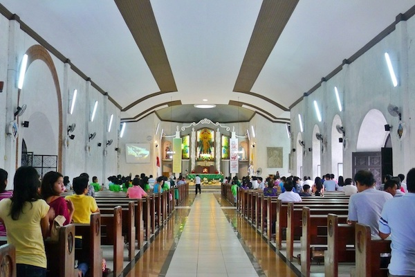

Among the most notable and must-visit churches in the Philippines is Daraga Church. Also known as Church of Nuestra Señora de la Porteria, this Daraga Albay tourist spot has witnessed numerous historic events like the 1814 Mayon eruption and World War II. Add this 18th-century baroque church in your itinerary for a memorable trip.
From Legazpi City: Daraga is about 6 kilometers away from the city. Take a Daraga-Legazpi jeepney route and ask the driver to bring you to Daraga municipal hall. From the Daraga Municipal Hall, take the stairs that will lead you up to the church.
From Cagsawa: Take the jeepney to Legazpi City and get off at Jollibee Daraga. From Jollibee, Daraga Church is just a few blocks away.